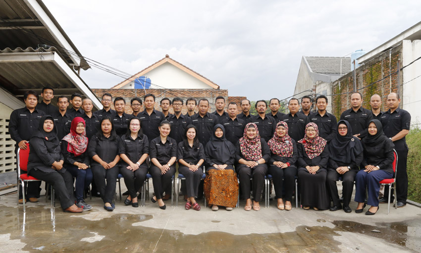

Fleksibel untukDesain & Spesifikasi Khusus
Disesuaikan denganMaterial & Fungsi Penggunaan
Dikerjakan melaluiProduksi & Quality Control


Selamat Datang di
PT Lestari Dini Tunggul
Perjalanan PT Lestari Dini Tunggul bermula pada tahun 1982 dari usaha yang sederhana dan berkembang melalui produksi linen rumah sakit. Seiring meningkatnya kebutuhan pelanggan, kapabilitas perusahaan diperluas ke pakaian medis, seragam kerja, dan industrial apparel untuk berbagai lingkungan profesional. Inovasi dan kreativitas menjadi dorongan untuk terus mengembangkan produk, sementara kualitas pengerjaan, kenyamanan, serta desain yang ergonomis menjadi pertimbangan penting dalam setiap solusi yang ditawarkan.
- Medical & industrial apparel
- Desain, ukuran, dan warna fleksibel
- Solusi untuk institusi & perusahaan
- Pengendalian kualitas berkelanjutan
Keunggulan Kami
Mengapa Memilih Kami?
Memadukan pengalaman puluhan tahun, material berstandar mutu, dan kapasitas operasional yang andal untuk memberikan pengalaman terbaik dan rasa aman bagi pengguna medis maupun industri.
Quality Assurance
Penggunaan material berstandar tinggi selalu dibarengi dengan peningkatan kualitas pengerjaan yang berkesinambungan. Hal ini memastikan setiap produk yang Anda terima awet, bermutu tinggi, dan memenuhi standar sertifikasi TKDN
Fast Response
Didukung oleh kapasitas pengetahuan dan operasional yang mumpuni, kami mampu merespons dan melayani secara cepat, mulai dari tahap perencanaan produk, penyesuaian desain, hingga penyusunan anggaran (budgeting) yang efisien.
Innovation
Kreativitas menjadi fondasi kami dalam mengembangkan produk. Kami mengaplikasikan teknologi material yang relevan dengan lingkungan kerja profesional, seperti fitur Soil Release, Water Repellent, dan pelapis Antibakteri.
Experience Focus
Berbekal pengalaman sejak 1982, produk kami telah digunakan oleh berbagai rumah sakit dari Papua hingga Aceh. Kami memahami betul bagaimana merancang pakaian yang ergonomis demi kenyamanan, keamanan, sekaligus meningkatkan citra instansi Anda.
Kanal Pengadaan & Marketplace
Temukan Kami di Berbagai Platform
Akses produk dan informasi perusahaan melalui kanal pengadaan serta marketplace yang memudahkan proses pembelian institusi maupun pelanggan profesional.
Pilihan Produk
Lihat Semua Produk
Produk Unggulan
Pilihan produk medical dan industrial apparel yang dapat disesuaikan dengan kebutuhan penggunaan, identitas, dan spesifikasi institusi.
Mitra Kami
Dipercaya oleh Lebih dari 1.000+ Institusi di Seluruh Indonesia
Dari ujung Papua hingga Aceh, produk Hospital Linen, Medical Clothing, dan Industrial Apparel kami telah menjadi pilihan utama bagi ribuan tenaga profesional yang mengutamakan standar mutu dan kenyamanan.
Punya Kebutuhan Produk yang Spesifik?
Diskusikan kebutuhan material, desain, ukuran, warna, identitas, dan jumlah pesanan. Tim kami siap membantu merumuskan spesifikasi yang selaras dengan fungsi dan standar internal Anda.